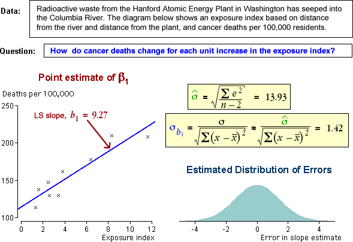
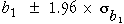
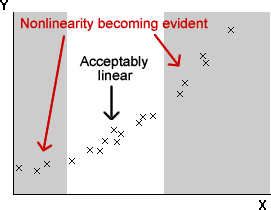
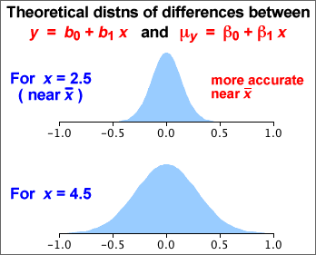

If you don't want to print now,
Bivariate data: population or sample?
In most bivariate data sets, we have no interest in the specific individuals from which the data are collected. The individuals are 'representative' of a larger population or process, and our main interest is in this underlying population.
Example
Data were collected by biologists from 15 lakes in central Ontario to assess how zinc concentrations in an aquatic plant were related to zinc concentrations in the lake sediment.
The biologists want to generalise from these specific lakes (and sediment samples) to describe the relationship between zinc concentrations in sediments and plants in a way that might be used to predict plant zinc from sediment samples in other similar lakes.
Response distribution at each X
In an experiment, several response measurements are often made at each distinct value of X. The diagram below shows one such data set using a histogram for the distribution of Y at each x-value.

Model for data
The response measurements at any x-value can be modelled as a random sample from a normal distribution. The collection of distributions of Y at different values of X is called a regression model.

Normal linear model for the response
The most commonly used regression model is a normal linear model. It involves:
The last two properties of the normal linear model can be expressed as
σy = σ
μy = β0 + β1x
The diagram below illustrates these three properties of the normal linear model: the distributions at different x-values have normal distributions with the same spread and the mean increases linearly with x.

Note: only the response is modelled
A normal linear model does not try to explain the distribution of x-values. In experimental data, they are fixed by the experimenter. In observational data, the x-values are usually random, but the regression model only explains how the y-values are related to them and treats them as constants.
The regression model only describes the conditional distribution of Y at each X.
Alternative descriptions of the model
The normal linear model describes the distribution of Y for any value of X:
Y ~ normal (μy , σy)
where
μy = β0 + β1x
σy = σ
An equivalent way to write the same model is...
y = β0 + β1x + ε
where ε is called the model error and has a distribution
ε ~ normal (0 , σ)
The error, ε , for a data point is the vertical distance between the cross on a scatterplot and the regression line.

Band containing about 95% of values
Applying the 70-95-100 rule of thumb to the errors, about 95% of them will be within 2 standard deviations of zero — i.e. between ±2σ.
Since the errors are vertical distances of data points to the regression line, a band 2σ on each side of it should contain about 95% of the crosses on a scatterplot of the data.

Slope and intercept
A normal linear model,
μy = β0 + β1x
σy = σ
involves 3 parameters, β0, β1 and σ. The model's slope, β1, and intercept, β0, can be interpreted in a similar way to the slope and intercept of a least squares line.
Examples of interpretation
| Context | Interpretation of β1 | Interpretation of β0 |
|---|---|---|
| Y = Yield of wheat per acre X = Fertiliser (kg per m2) |
Increase in mean yield per acre for each additional kg/m2 of fertiliser | Mean yield per acre if no fertiliser is used |
| Y = Exam mark X = Hours of study by student before exam |
Increase in expected mark for each additional hour of study | Expected mark if there is no study |
| Y = Hospital stay (days) X = Age of patient |
Average extra days in hospital per extra year of age | Average days in hospital at age 0. Not particularly meaningful here. |
Least squares
In practical situations, we must estimate β0, β1 and σ from a data set that we believe satisfies the normal linear model.
The best estimates of β0 and β1 are the slope and intercept of the least squares line, b0 and b1
Since b0 and b1 are functions of a data set that we assume to be a random sample from the normal linear model, b0 and b1 are themselves random quantities and have distributions.
Simulated example
The diagram below represents a regression model with a grey band. A sample of 20 values has been generated from this model and the least squares line (shown in blue) has been fitted to the simulated data. The least squares line provides estimates of the slope and intercept but they are not exactly equal to the underlying model values.

A different sample would give 20 different points and a different least squares line, so the least squares slope and intercept are random.
Errors and residuals
The error, ε, for any data point is its vertical distance from the regression line.
In practice, the slope and intercept of the regression line are unknown, so the errors are also unknown values, but the least squares residuals provide estimates.

Estimating the error standard deviation
The third unknown parameter of the normal linear model, σ, is the standard deviation of the errors,
σ = st devn( ε )
σ can be estimated from the least squares residuals, {ei},

This is similar to the formula for the standard deviation of the residuals, but uses the divisor (n − 2) instead of (n − 1). It describes the size of a 'typical' residual.
Example

Distribution of the least squares slope and intercept
The least squares line varies from sample to sample — it is random.

The least squares estimates b0 and b1 of the two linear model parameters β0 and β1 therefore also vary from sample to sample and have normal distributions that are centered on β0 and β1 respectively.

Standard error of slope
When b1 is used as an estimate of β1, the estimation error has a normal distribution,
error in estimate of β1 = (b1 − β1) ~ normal ( 0, σb1 )
This standard deviation is the standard error of the estimate,

where sx is the standard deviation of X. Since σ is unknown, we must replace it with an estimate from the data to obtain a numerical value for the standard error,

Example

The estimated error distribution gives in indication of how close our least squares estimate, b1 = 9.27, is likely to be to the population regression slope, β1.
Confidence interval for the slope
When the least squares slope, b1, is used to estimate β1, the error has a normal distribution,
error in estimate of β1 = (b1 − β1) ~ normal ( 0, σb1 )
This suggests a 95% confidence interval of the form

In practice, we must replace σ in the formula for the standard error with an estimate (based on the sum of squared residuals),

so the constant 1.96 must be replaced by a larger value from the t distribution with (n - 2) degrees of freedom.
A 95% confidence interval for the slope is

Most statistical software will evaluate b1 and its standard error for you when you fit a normal linear model, so it is fairly easy to evaluate the confidence interval in practice — you will not need to use any of the formulae above!
Example
For the example on the previous page, the least squares estimate of the slope and its standard error were:
b1 = 9.27, se (b1) = 1.42
Since there were n = 9 data points, tn − 2 = t7 = 2.365, so a 95% confidence interval for the slope is

We are 95% confident that the expected number of deaths per 100,000 is between 5.9 and 12.6 higher for each unit increase in the exposure index.
Properties of 95% confidence interval
Since a confidence interval for the slope, β1, is evaluated from random sample data, it will vary from sample to sample. In 95% of such samples, the 95% confidence interval will include the true population slope, but in 5% of samples it will not.
We cannot tell whether or not our single data set is one of the 'lucky' ones.
Simulation

What affects the accuracy of the least squares slope?
The standard deviation of b1 (its standard error) is

where
The standard error of b1 is lowest when:
Implications for experimental design
To get the most accurate estimate of the slope from experimental data,
However if the spread of x-values is increased too much, the relationship may not be sufficiently linear for a linear model to be used.

Nonlinearity is a major problem, so it is important to be able to assess whether a relationship is linear. Don't just collect data at the ends of the 'acceptable' range of x-values, even though this maximises sx.

Does the response depend on X?
In a normal linear model, the response has a distribution whose mean, µy, depends linearly on the explanatory variable,
Y ~ normal (μy , σ)
If the slope parameter, β1, is zero, then the response has a normal distribution that does not depend on X.
Y ~ normal (β0 , σ)
This can be tested formally with a hypothesis test for whether β1 is zero.
Testing for zero slope
To assess whether the explanatory variable affects the response, we test the hypotheses
H0 : β1 = 0
HA : β1 ≠ 0
The test is based on how far the least squares slope, b1, is from zero. To assess this, we must take into account its standard deviation (standard error),

If we knew the value of σ, we could standardise b1 to get a test statistic,
| standardised value, |
|---|
If β1 was really zero (H0), the probability of getting a least squares slope as far from zero as that recorded would be the p-value,

Unfortunately σ is usually unknown and the standard deviation of b1 must be estimated from the sample data. We therefore use a test statistic of the form
| t ratio, |
|---|
and refer to a t distribution with n - 2 degrees of freedom to find the p-value.

The p-value is interpreted in the same way as for other hypothesis tests — a p-value close to zero means that the sample slope is far enough from zero to be inconsistent with H0: β1 = 0.
Examples


Strength of relationship vs strength of evidence for relationship
It is important to distinguish between the correlation coefficient, r, and the p-value for testing whether there is a relationship between X and Y.
It is important not to confuse these two values when interpreting the p-value for a test.
This is partly explained by an alternative formula for the test statistic,

The test statistic and the p-value therefore both depend on both r and the sample size, n. Increasing n and increasing r both result in a lower p-value.

Properties of p-value
P-values for testing whether a linear model's slope is zero have the same properties as p-values for other hypothesis tests. In particular,
When Y and X are not related (β1 = 0), it is still possible to get small p-values, suggesting that β1 is not zero. However there is only probability 0.01 of getting a p-value as low as 0.01 — it is unlikely but possible. Such a p-value is more likely if the variables are related so we interpret it as giving strong evidence of a relationship.
A normal linear model provides a response distribution for all X. With estimates for all three model parameters, we can obtain the approximate response distribution at any x-value, even if we have no data at that x-value.

What affects the accuracy of a prediction?
The predicted response at X is
 = b0 + b1 x
= b0 + b1 x
and has a normal distribution with mean
μy = β0 + β1x
Its standard deviation depends on the value x at which the prediction
is being made. The further x is from
its mean in the training data,  ,
the greater the variability in the prediction.
,
the greater the variability in the prediction.
Simulation
The effect of the x-value on the variability of the predicted response can be shown using least squares lines fitted to simulated data:

The diagram below shows two theoretical distributions from the above model. (The spread would be even greater for predicting at x = 10.)

Estimating the mean response
In some situations, we are interested in estimating the mean response at some x-value,
μy = β0 + β1x
The least squares estimate,
 = b0 + b1 x
= b0 + b1 x
becomes increasingly accurate as the sample size increases (since b0 and b1 become more accurate estimates of β0 and β1).
Predicting a single item's response
To predict the response for a single new individual with a known x-value, the same prediction would be used,
 = b0 + b1 x
= b0 + b1 x
However no matter how accurately we estimate the mean response for such individuals, a single new individual's response will have a distribution with standard deviation σ around this mean and we have no information to help us predict how far it will be from its mean. The prediction error cannot have a standard deviation that is less than σ.
The error in predicting an individual's response is usually greater than the error in estimating the mean response.
Simulation
The diagram below contrasts estimation of the mean response and prediction of a new individual's response at x = 5.5. Least squares lines have been fitted to several simulated data sets, one of which is shown on the left. The two kinds of errors from the simulations are shown on the right, showing that the prediction errors are usually greater.

The same value,
| = b0 + b1 x |
is used both to estimate the mean response at x and to predict a new individual's response at x, but the errors are different in the two situations — they tend to be larger for predicting a new value.
95% confidence interval for mean response

A formula for the standard error on the right exists, but you should rely on statistical software to find its value.
95% prediction interval for a new individual's response
For prediction, a similar interval is used:

where k is greater than the corresponding standard error for the confidence interval. Statistical software should again be used to find its value.
Example
The diagram below shows 95% confidence intervals for the mean response at x and 95% prediction intervals for a new response at x as bands for a small data set with n = 7 values.

Extrapolation
These 95% confidence intervals and 95% prediction intervals are valid within the range of x-values about which we have collected data, but they should not be relied on for extrapolation. Both intervals assume that the normal linear model describes the process, but we have no information about linearity beyond the x-values that have been collected.
Assumptions
The normal linear model is:
y = β0 + β1x + ε
ε ~ normal (0 , σ)
The following four requirements are implicit in the model but may be violated, as illustrated by the examples.
Linearity The response may change nonlinearly with x.
|
Constant standard deviation The response may be more variable at some x than others.
|
Normal distribution for errors The errors may have skew distributions.
|
Independent errors When the observations are ordered in time, successive errors may be correlated.
|
Residual plots
The above problems may be evident in a scatterplot of the raw data, but a residual plot often highlights any problems.

Linearising the relationship between Y and X
Even if X and Y are nonlinearly related, some transformation of X may be linearly related to some transformation of Y. For example, the data may satisfy the model
y2 = β0 + β1 log x + ε
ε ~ normal (0 , σ)
The parameters of this model could again be estimated by least squares, based on the transformed values of the two variables, and confidence intervals and hypothesis tests would be valid.
Example: Transformation of X

For this data set, a linear model seems reasonable after a log transformation of X.

Transformation and the error standard deviation
Transforming X does not affect the spread of response values at each value of X. Transformation of X therefore does not affect whether or not the linear model's assumption of constant error standard deviation holds.
However, transforming Y not only affects linearity of the relationship, but also affects whether or not the error standard deviation is constant.
Example
The raw data shown in the scatterplot on the top left shows both curvature and non-constant variance — the y-values are much more variable when X is near 0 than when X is high.
A log transformation of Y both linearises the relationship and removes the non-constant variance.
Fortunately, the same transformation of the response that linearises the relationship often also results in fairly constant error standard deviation.
Prediction using transformed variables
To predict Y at any value x, we use the least squares line that was fitted to the transformed data.
Example
In the example below, a linear model can be used to describe the relationship between log10(y) and log10(x). The diagram shows how it can be used to predict y from x.

Prediction intervals can be obtained in a similar way. A prediction interval is found using the transformed variables, then its end-points are back-transformed into values of Y on its original scale.
For example, if the square root of Y is linearly related to X, we find a prediction interval for sqrt(Y), then square both ends of this interval to get a prediction interval for Y itself.
Outliers and errors
In a scatterplot, cross that is unusually far above or below the regression line is an outlier. It would correspond to a large error, ε.

Standardised residuals
The least squares residuals are estimates of the unknown errors and can be used in a similar way to give information about whether there is an outlier.


To help assess the residuals, we usually standardise them — dividing each by an estimate of its standard deviation.
| standardised residual = | e |
| se |
Large residuals pull very strongly on the line since they are squared in the least squares criterion. As a result,
Outliers will strongly pull the least squares line towards themselves, making their residuals smaller than you might otherwise expect.
Leverage
If an outlier corresponds to an x-value near its mean, it usually will have a large residual,

However if the outlier occurs at an extreme x-value, it has a stronger influence on the position of the least squares line than the other data points. Such points are called high leverage points and pull the least squares line strongly towards them. Outliers that are high leverage points may therefore result in residuals that do not stand out from the other residuals.

Normal probability plot of residuals
The normal linear model assumes that the model errors are normally distributed,
ε ~ normal (0 , σ)
A histogram of the residuals can be examined for normality but a better way is with a normal probability plot of the residuals. If the residuals are normally distributed, the crosses in the normal probability plot should lie close to a straight line.

Warning
If the assumptions of linearity and constant variance are violated, or if there are outliers, the probability plot of residuals will often be curved, irrespective of the error distribution.
Only draw a probability plot if you are sure that the data are linear, have constant variance and have no outliers.
Independence of the errors
The normal linear model assumes that the errors are uncorrelated with each other, but correlated errors sometimes arise.
Correlated errors may arise in an experiment in a greenhouse where adjacent plants will be grown in similar conditions (light, moisture, air flow). An unusually high growth rate for one plant may be associated with environmental conditions that also cause unusually high growth rates in adjacent plants.
Correlated errors are most common when the observations are made sequentially in time. This is called serial correlation.
Assessing serial correlation
Strong serial correlation may be visible in a plot of residuals against time. A more formal test uses a test statistic called the Durbin-Watson statistic, d. Writing the successive residuals as e1, e2, ..., en,

If successive residuals are similar, d will be close to zero. An approximate p-value can be obtained from a computer, special statistical tables or with a simulation such as that below.

Warning
If a linear model is used for a time series, but the relationship is actually nonlinear, successive residuals also tend to be similar and the Durbin-Watson statistic will also be small.
An unusually small Durbin-Watson statistic can be caused by either serial correlation or nonlinearity.